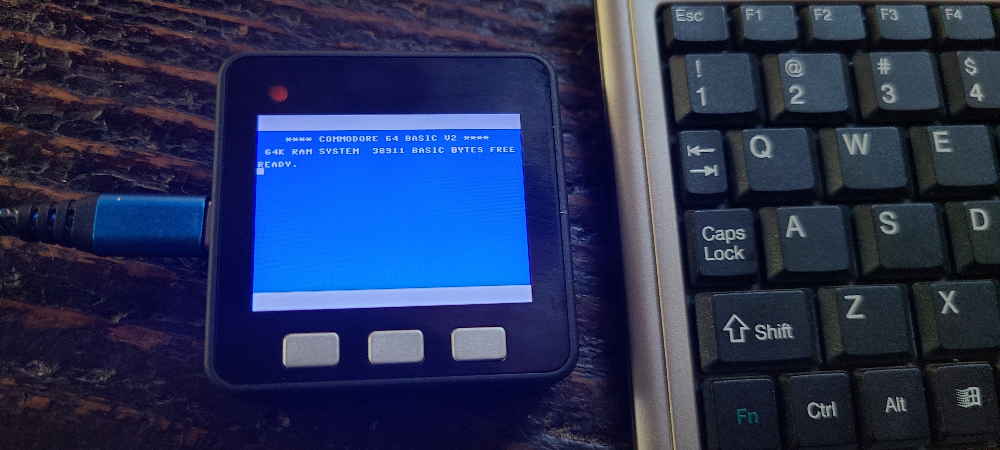

Commodore 64 Keyboard Emulator, key scan codes helper
- Flash M5 Core
with
C64 Emulator
via USB cable
-
Browser to Serial Port
- While keeping this page in focus, type to get keystrokes in emulator
- Optionally open Dev Tools to watch real-time codes in console log
